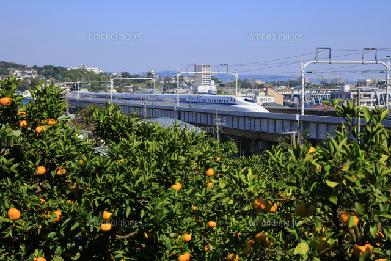

Citrus Link - 契約農業による流通の再設計
Citrus Linkは、神奈川県小田原を拠点に、温州みかん農家と食品加工会社を結ぶ「契約農業」モデルを軸に、農業の収益安定化とブランド化を推進しています。

農家と加工会社の間であらかじめ価格・納期を取り決めた契約により、安定した収入と安定した原材料調達を実現。
単なる農産物ではなく、「物語のある商品」としてブランディング。ギフト市場や都市部の百貨店にも展開。
ジュースやジャムなどの6次産業化を支援。パッケージ設計・ラベル制作・価格戦略までサポート。
都内のセレクトショップ、カフェ、百貨店、ふるさと納税の特設ページ等へ農家・加工会社の販路を開拓。
ご質問や提携のご相談はお気軽にご連絡ください。
Email: okamoto04140414@gmail.com
Tel: 070-8337-1350